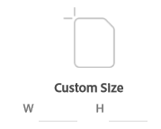

Creating a custom project
You can choose the dimensions for your new project by creating a custom project.
You will be able to create a custom project in Adobe XD.
You can create a custom project, if you do not want to use any of the preset projects. The custom project allows you to have specific values for width and height.
- Open Adobe XD.
- Navigate to Custom Size. 
-
Enter the width and the height for the artboard in the W and H
sections.

-
Click on Custom Size to create your custom project.

As a result after following the steps above you will have created a custom project in Adobe XD.

When you want to create a new project with specific width and height, different from the prest artboard, you need to create a custom project.